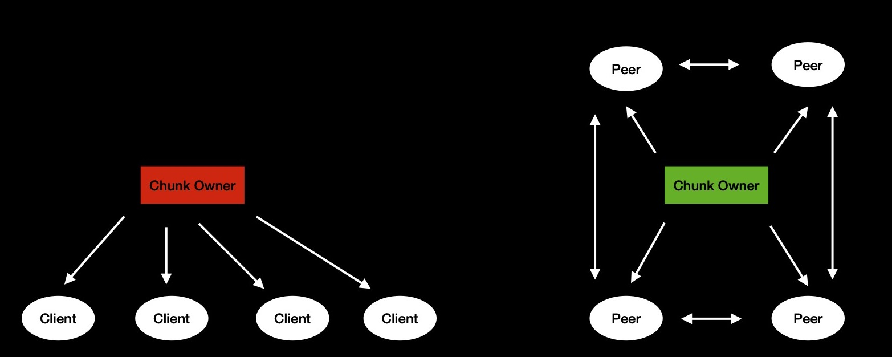
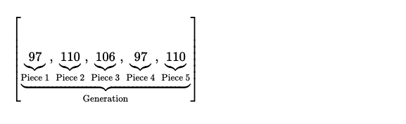
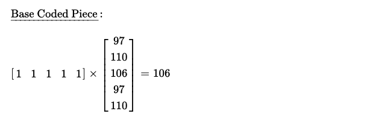

After studying Random Linear Network Coding for last few weeks, I've decided to make use of it for designing data syncing protocol in p2p network. Client-server model works pretty well, but I can make better use of bandwidth of all participants when each plays role of both client & server. Assuming a chunk of data, which is owned by only one peer, has suddenly become popular. Lots of peers who has interest in that chunk could directly ask the only owner for chunk --- resulting into heavy load on owner. But one thing to notice, as interested peers progressively keep owning some portion of chunk, they could also help others with what they have now. This way only owner doesn't end up feeding all interested parties, rather interested parties also feed other interested parties. This calls for decentralised coordination --- which is not so easy. In p2p networks, piece collection is an important problem, where each interested peer tries to collect all pieces of whole data chunk. Because if owner sends whole chunk as a single entity, coordination is harder to define & manage, rather data chunk is splitted into multiple smaller pieces. Now interested peers will attempt to collect all pieces from owner & partial owners. Duplicate pieces are not helpful, every peer is looking for not-yet-seen pieces. As syncing tends to reach end, peers start seeing more duplicates, which results into longer sync time. Some pieces are rare, some are very rare and lots of peers attempting to collect those rare pieces, resulting into chaos in network.

For solving scope of rarest piece collection problem --- rather than
treating each piece as unique, I can combine fragments of pieces together and form whole new pieces,
which are not easily distinctive. From high level, it looks all pieces are more or less equally important.
Now peers don't collect original pieces from actual owner/ partial owners, rather they collect these
new pieces ( consisting of fragments of other pieces too ) and decode back to original when they've
collected enough useful pieces. While sharing these coded pieces, peers also share how have they combined
original pieces for constructing coded ones. Actually original pieces are randomly assigned some
coefficients/ weights i.e. pieces are added together while multiplying by respective random weights & coded pieces are formed.
If there're N-many original pieces, at least N-many useful coded pieces are required for reconstructing back
whole chunk.
This is what RLNC does, abstractly.
I start with a byte slice i.e. [97, 110, 106, 97, 110] which is owned
by N-many parties in p2p network. I could have asked one party to share that slice with me & I've the slice
now --- total N+1 owners. But I can also ask M ( < N )-many parties to share certain portion of slice
with me, concurrently, expecting I get whole slice faster. The effects are clearly visible when slice size is larger.
So I ask each of M-many peers to share few pieces with me, but wireless networks are unreliable inherently.
As my goal is reliably getting pieces as fast as possible, while transferring least possible bytes of data,
I decide to use coded piece distribution scheme. Each of M-many owner peers code original pieces & share coded pieces
with me, when I've enough of them, I decode them back to original byte slice. I can use RLNC for that.
If byte slice size is large, then I've to buffer all those coded pieces & at end when enough of them are collected,
I attempt to decode by performing computionally expensive large matrix inversion, which costs ~ O(n^3). First issue, I can't
understand what I'm receiving as I receive it, rather after I receive all, I try to figure out what I've received. I want to
have a scheme where I can work on decoded data, as I keep receiving remaining, while still enjoying benefits of network coding.
Second, I don't want to perform inversion of a large matrix. For solving second issue, I decide to split whole
byte slice into generations & pieces of each generation are coded together i.e. there's no cross-generation
coding/ decoding dependency. As generations are lot smaller in size, performing small matrix's inverse is not tiresome.
Introducing idea of generations also decreases waiting time before decoding, to a great extent. But still for a single generation's
decoding, I've to wait for receiving all coded pieces of generation.
In following design, I'm going to consider byte slice [97, 110, 106, 97, 110] as single generation, with 5 pieces i.e. each piece consists of only single symbol.

My interest is in transferring this byte slice from M-many peers with as little coordination possible. The more
coordination, the more network traffic, the more bandwidth wastage. In plain & simple generational RLNC, randomly
coding coefficients are drawn from some agreed upon finite field. As coefficients are random, they need to be
accompanied with coded pieces for successful decoding.
As I've 5 pieces, I randomly choose 5 coefficients from Galois Field (2**8), which has
256 elements & perform coding. Coded piece & coding vector, both are carried over wire to peer.
One way to avoid sending coding vector, which is an overhead, is pair of peers
agreeing upon seed, used for generating random coding coefficients.
At beginning of session seed is shared & for rest of session it's used on receiver's
side for populating coding vectors --- now only {"coded_piece": 122} sent over wire,
in every round of piece transfer.
One important goal is to avoid obtaining linearly dependent pieces ( read useless pieces ), which is sometimes result of
randomly drawn coding coefficients. For sake for avoiding it, I choose to use prime numbers as coding coeffients
in a specific way.
Assume I'm working on a range, where I've 6 primes which are [2, 3, 5, 7, 11, 13] & my original pieces are [97, 110, 106, 97, 110]. I want to code & generate 5 pieces, while using primes as coding coefficients in ordered fashion, but I want to keep coordination as little as possible. I choose to use one sliding window technique, where each piece's coeffients are chosen from one prime ring buffer based on selected index, which I call coding index. For coding index i, start with filling coding vector's index i with prime number at index i ( primes are ascending ordered in ring buffer ), then following indices are filled with consequtive elements from ring buffer. If coding index > 0, first few remaining positions are filled in circular way with consequtive primes, continuing after point where left off while populating in forward direction.
| Original Piece | Coding Index | Coding Vector | Coded Piece | Over the Wire | |
|---|---|---|---|---|---|
| Coding Index | Coded Piece | ||||
| [97, 110, 106, 97, 110] | 0 | [2, 3, 5, 7, 11] | 112 | 0 | 112 |
| 1 | [13, 3, 5, 7, 11] | 101 | 1 | 101 | |
| 2 | [13, 2, 5, 7, 11] | 11 | 2 | 11 | |
| 3 | [13, 2, 3, 7, 11] | 106 | 3 | 106 | |
| 4 | [13, 2, 3, 5, 11] | 168 | 4 | 168 | |
Actually I work on GF(2**8), having 256 elements i.e. from 0 to 255, which has 54 primes in range. I keep these primes in ascending sorted form in a ring buffer. I use these primes in ordered fashion for drawing coefficients. But it's not only sufficient, I introduce concept of various kinds of coded pieces based on how coding is being performed/ how coding coefficients are chosen from the prime ring buffer I just defined.
Base Coded Piece : A base coded piece is constructed by taking coding vector with all elements set to 1. As I work with original pieces [97, 110, 106, 97, 110], I choose my base coding vector [1, 1, 1, 1, 1], resulting into coded piece 106.

Decodable Coded Piece : A decodable piece is same as base coded piece, except only one element of coding vector
is > 1. As I'm only interested in prime numbers as coding coefficients, I choose
!= 1 coefficients from prime ring buffer. This piece is called decodable for a reason,
because it's very easily decodable when recipient party has one base coded piece too.
Though it's possible to fill any one position of coding vector with prime number, but
later I show how specifying/ communicating which certain index to fill with prime is helpful in designing
my protocol, while keeping bandwidth cost low.
Assuming I've two pieces, one base coded piece i.e. [1, 1, 1, 1, 1, 106] & other one decodable coded piece with coding index 0 i.e. [2, 1, 1, 1, 1, 201], I can instantly figure out respective original piece i.e. at index 0, because coding index is 0, for which coding coefficient was chosen > 1.
Rich Coded Piece : A rich coded piece, is indeed rich with coding coefficients i.e. coding vector has all elements
set as > 1, where these elements are selected from prime ring buffer. Randomly choosing primes
from ring buffer & preparing coding vector works pretty well, but little structured
operational mode brings in lots of benefits. Coding index can be specified here too, so that
where to start filling coding vector with primes can be easily defined. Here I choose coding index 0
for rich coding, which is why I start filling coding vector at index 0 with prime at index 0 of ring buffer i.e.
2. For remaining places, I start rolling over while plucking consequtive primes from ring buffer. And consequtive
elements are 3, 5, 7, 11.
If I've to work with coding index 1 & generate coding vector for rich coding, I'll
fill index 1 of coding vector with prime at index 1 i.e. 3. And next places rightwards
are filled with 5, 7, 11. Only one place remaining i.e. index 0 of coding vector, which I fill
with next element of prime ring buffer i.e. 13. So, I finally prepare coding vector [13, 3, 5, 7, 11]
while just knowing coding index 1.
Question is, how to use these piece construction techniques, so that I can decrease chance of getting duplicate coded pieces. I propose one way how peers can share pieces with recipient party which reduces scope of encountering duplicate pieces, even when multiple peers are acting as sender while maintaining little to no coordination among them.
As usual, I start with an example. Say, I want to have byte slice [97, 110, 106, 97, 110]
from 2 peers, who're having whole slice. Whole slice transfer is performed in single
generation.
I ask Peer_1 to start sending pieces from coding index 0, while using skip factor 2. I'm setting
skip factor 2, because I plan to connect to 2 peers & download pieces concurrently from both of them.
So Peer_1, shares 3 pieces with coding index [0, 2, 4].
Peer_1 starts with sharing base coded piece, where all elements of coding vector are set to 1.
Resulting into construction of coded piece 106.
After that peer enters loop, where it prepares decodable piece, with coding index set as 0.
Using this coding vector, it generate one decodable coded piece 201.
One thing to notice, during first decodable coded piece sharing, Peer_1 hasn't shared
any rich piece. But in next round, it'll.
In this round, coding index is 2, so coding vector is constructed by filling index 2
of coding vector with prime number at index 2 i.e. 5 & other elements set to 1. This coding
vector is used for decodable piece. Constructed coded piece is 223. But this is the round when
rich piece also needs to be shared, which is prepared by constructing respective coding vector
i.e. starting at index 2, filling up with prime at index 2 i.e. 5 & circularly filling other places
by drawing next primes from ring buffer. This results into rich piece 23.
This round, peer works with coding index 4, so it prepares decodable piece by putting 11 i.e. prime
at index 4 from prime ring buffer, at index 4 of coding vector, while filling up other places with 1.
Finally it results into decodable coded piece 225.
| Original Pieces | Coding Vector | Piece Type | Over-the-Wire | |
|---|---|---|---|---|
| Coding Index | Coded Piece | |||
| [97, 110, 106, 97, 110] | [1, 1, 1, 1, 1] | Base | NaN | 106 |
| [2, 1, 1, 1, 1] | Decodable | 0 | 201 | |
| [1, 1, 5, 1, 1] | Decodable | 2 | 223 | |
| [13, 17, 5, 7, 11] | Rich | 2 | 23 | |
| [1, 1, 1, 1, 11] | Decodable | 4 | 225 | |
On the other hand, I ask Peer_2 to start at coding index 1, while using skip factor 2, due to
presence of two concurrent peers. It shares 2 pieces with coding indices [1, 3].
Peer_2 starts by sharing base coded piece, which is exactly same as what Peer_1 has also
shared.
Now it starts looping, with coding index 1, prepares coding vector by putting
1st prime number i.e. 3 of ring buffer, at index 1 of coding vector & all other places
filled with 1. Constructed decodable coded piece is 182.
This is the round, when rich piece to be also shared, along with decodable piece. With coding index 3,
because skip factor set to 2, first prepares coding vector for decodable piece, which results into
piece 49. For coding vector of rich piece, starts with filling up vector at index 3, with
3rd prime number 7, while putting next primes from ring buffer in circular fashion into
remaining places. As a result of it, constructed piece is 152.
| Original Pieces | Coding Vector | Piece Type | Over-the-Wire | |
|---|---|---|---|---|
| Coding Index | Coded Piece | |||
| [97, 110, 106, 97, 110] | [1, 1, 1, 1, 1] | Base | NaN | 106 |
| [1, 3, 1, 1, 1] | Decodable | 1 | 182 | |
| [1, 1, 1, 7, 1] | Decodable | 3 | 49 | |
| [13, 17, 19, 7, 11] | Rich | 3 | 152 | |
I propose one modification in protocol, where receiver can specify whether it wants peer to send base coded piece or not. Because if it receives same base coded piece from two peers, which doesn't help anyhow. Rank of decoding matrix doesn't increase i.e. useless piece, no doubt. Receiver sets intension of receiving base coded piece from Peer_1 only.
It's a good time to run protocol & see what happens from receiver's perspective.
For receiver goal is to progressively keep decoding pieces & supplying to application
layer with least possible delay, while keeping computional cost as low as possible.
Receiver sees coded pieces in form ( coding-index, {base,decodable}-coded-piece, rich-coded-piece ).
When coding-index is empty, it's base coded piece at index 1 of received tuple. It should be received
only once from only one peer. If coding-index
is non-empty, tuple[1] is decodable coded piece. For non-empty coding-index cases, last element of tuple
may be non-empty sometimes, which denotes rich coded piece. One thing to note, when rich coded
piece is shared, decodable one is also shared, as both of them having same coding index, it's
sent over-wire only once --- some saving !
From Peer_1, first piece received is base coded piece. A base coded piece is base coded
because it's coding vector is simply [1, 1, 1, 1, 1].
So I've only [1, 1, 1, 1, 1, 106] in my decoding matrix.
Not enough for solving any equation. Then, Peer_2 shares one decodable piece with coding vector 1.
It denotes, it's possible to figure what's at index 1 of original piece slice, by row-reducing
decoding matrix. I update decoding matrix by appending [1, 3, 1, 1, 1, 182].
Coding vector recreation just from coding index is very easy on receiver's end, as it was
on sender's end.
Row reduction correctly reveals one element of original slice i.e. at index 1.
Again Peer_1 shares decodable piece with coding index 0. As coding index is 0, coding
vector can be formed easily i.e. [2, 1, 1, 1, 1].
Updating decoding matrix by appending [2, 1, 1, 1, 1, 201]
& attempting to row reduce reveals another piece i.e. at index 0 of original byte slice.
Till now, receiver has received 3 linearly independent pieces from 2 peers. So it's
decoding matrix has rank of 3.
It needs at least 2 more useful pieces for completely figuring out what's whole byte slice.
Fortunately, Peer_2 shares both decodable & rich coded pieces with coding index 3. Reconstructing
coding vector for decodable piece with coding index 3 is easy i.e. [1, 1, 1, 7, 1].
And for rich coded piece respective coding vector is [13, 17, 19, 7, 11].
Appending both of these pieces into coding matrix, reveals all pieces.
Though receiver makes use of other pieces received later, it doesn't make any change
in already decoded pieces. So receiver can ask Peer_1, which shares last two pieces, to
not send any more pieces.
Receiving party successfully decodes pieces in progressive mode, while collaborating
with two peers for syncing with least possible messaging overhead & also putting very
less computational burden on self.
This demonstration only shows how protocol should be working with single generation,
but in reality for syncing large chunks of data, it needs to work with multiple generations.
As data chunk is first splitted into generations & it's not a cross-generation scheme,
it syncs pieces of same generation from multiple peers, while also working on other generations
concurrently in a different session with few peers. For avoiding reception of duplicate pieces,
skip factor should be set optimistically. Say, when working with 3 peers for syncing data of
certain generation, skip factor set to 3. Now Peer_1 shares pieces with coding indices [0, 3, 6, ...],
when it was asked to start with coding index 0. Similarly other two peers share non-overlapping sets of pieces,
while only arguments shared over wire are starting coding index & skip factor. If noticed carefully,
I need to have (P+1)-many primes for working with P-many original pieces in a generation, while
not producing duplicate coded pieces. As I've 54 primes in 0 - 255 range, I can work with
53 pieces in a generation. So, splitting should be done while respecting this constraint.
It's still possible to receive few duplicate coded pieces, if some peer connection fails in mid of transfer,
so other peer comes into picture. Session initiation with new peer begins with same ( as used for failed peer )
starting coding index & skip factor, which might result into some duplicate pieces. But it can be avoided
by setting starting coding index of session, to where failed peer left off.
Though skip factor needs to be properly set to avoid scope of receiving duplicate pieces. It stays
quite negligible, but still can be improved.
I've written one simulator demonstrating protocol flow, which I keep here for future reference. I plan to write real implementation to get clear picture of protocol's benefits & limitations, so that I can revise it further. I'd love to learn about your suggestion.
Have a great time !